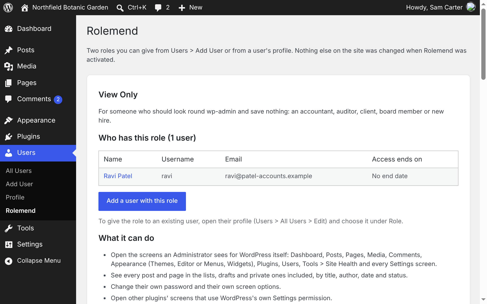
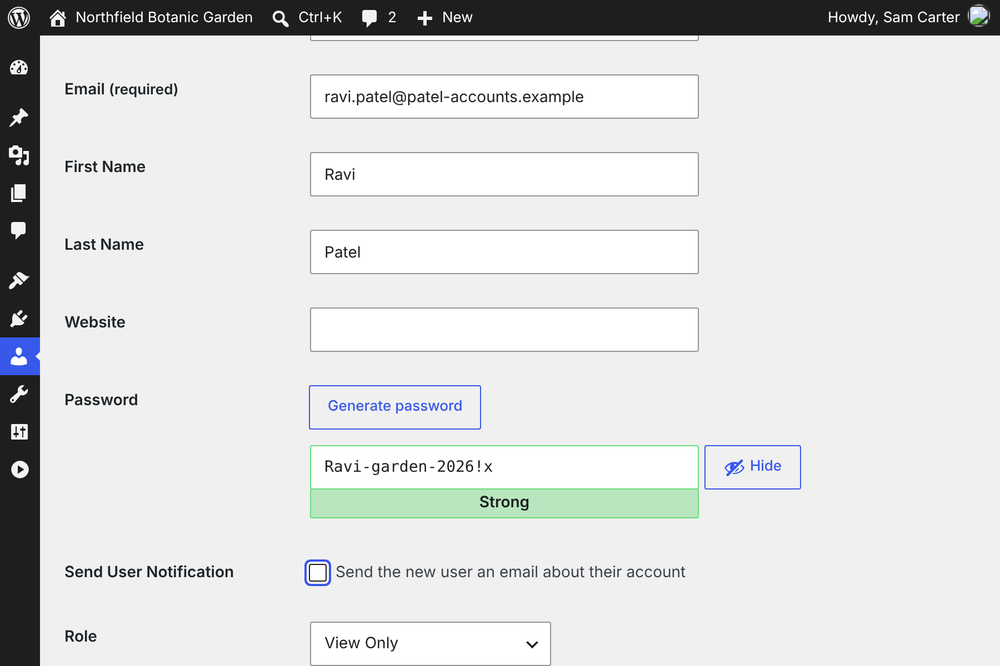
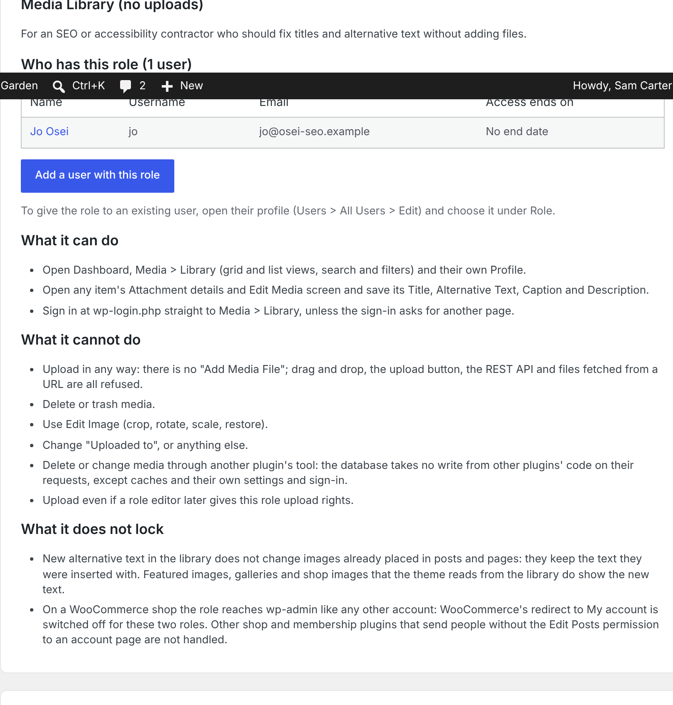
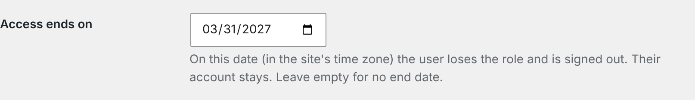
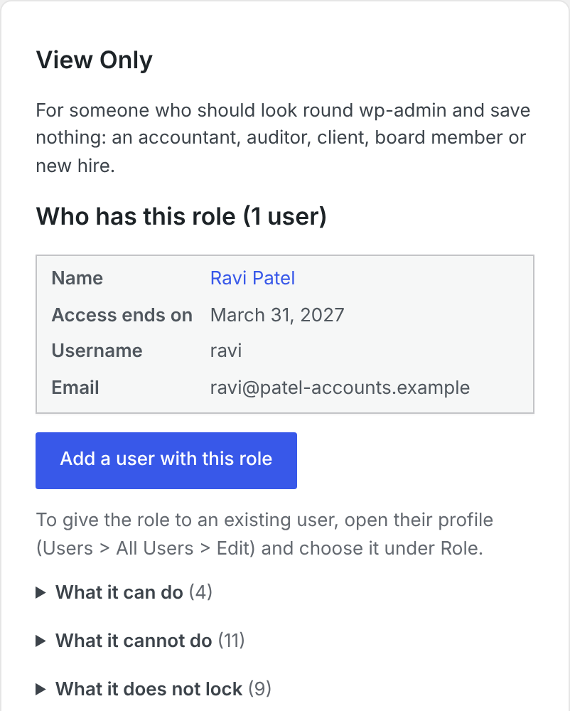

Rolemend quick start
Installing Rolemend, giving someone a role, and what Rolemend Pro adds. Each zip also has a readme.txt with answers to common questions. Back to the Rolemend product page.
Install
Requires WordPress 6.5 or later and PHP 7.4 or later.
- Get the zips. Everyone needs the free plugin, rolemend.zip (version 1.3.1), from this site. Pro buyers also get
rolemend-pro.zip(version 1.2.1) from Polar, through the link in the order email. Do not unzip them. - In WordPress, go to Plugins > Add Plugin, click Upload Plugin, choose
rolemend.zip, then Install Now and Activate. Activation adds the two roles and nothing else: no notice, no wizard, no redirect. - Pro only: do the same with
rolemend-pro.zip, after the free plugin. If you activate Pro first, it activates and does nothing, and the Plugins screen shows one notice with a link to download or activate the free plugin; Pro starts as soon as the free plugin is active. If the free plugin is deactivated or removed later, Pro stops and shows the same notice.
Give someone a role
- Go to Users > Rolemend. It lists who has each role and what each role can do, cannot do and does not lock.
- Click Add a user with this role under View Only or Media Library (no uploads). Users > Add User opens with the role already chosen; fill in the username and email and click Add User.
- For someone who already has an account, open their profile (Users > All Users > Edit), choose the role under Role and click Update User.

Rolemend as the administrator: 'Two roles you can give from Users > Add User or from a user's profile. Nothing else on the site was changed when Rolemend was activated.' The View Only card lists Ravi Patel (ravi, ravi@patel-accounts.example), the 'Add a user with this role' button, and the start of 'What it can do'" width="1024" height="640" loading="lazy">
Add User for Ravi Patel: a strong password set, 'Send the new user an email about their account' unticked, Role set to View Only, and the Add User button" width="1024" height="640" loading="lazy">What a View Only user sees
A "View only" marker in the toolbar on every screen, and the screens an Administrator sees for WordPress itself: Dashboard, Posts, Pages, Media, Comments, Appearance, Plugins, Users, Tools > Site Health and every Settings screen. Lists show every post and page, drafts and private ones included. A save on WordPress's own screens is refused with "This account is view only, so nothing was changed. Ask an administrator if this change is needed." On their Profile they can change their own password and nothing else. Drafts are listed but cannot be opened (the message says the editor does not open), Tools > Export and the file editors are not available, and other plugins' screens and menu entries appear only if they use WordPress's own Settings permission. Of WooCommerce's, only Tools > Scheduled Actions appears: it can be read, and its Run and Cancel links show the same refusal and do nothing. WooCommerce's other screens, and Yoast SEO's, GiveWP's and Contact Form 7's, do not appear, and neither do other plugins' links on the Plugins screen, Dashboard widgets or notices. Opening a screen that exists only to change things (Add User, another person's profile, Export) says that the screen does not open. Appearance > Editor opens, but its previews of posts, pages and navigation are empty, and a notice in the editor says why.
What a Media Library (no uploads) user sees
Dashboard, Media > Library (grid and list, search and filters) and their own Profile. After signing in at the usual login page they land on Media > Library (unless the sign-in link asks for another page). To fix alt text: click a photo, type in Alternative Text and click elsewhere; "Saved." appears. Title, Caption and Description save the same way, or on the Edit Media screen with Update. There is no Add Media File and no Edit Image button; a dropped file is refused with a plain message. On a WooCommerce shop they sign in to wp-admin like any other account, not to the shop's My account page. Images already placed in posts and pages keep the alt text they were inserted with; featured images, galleries and shop product photos that the theme reads from the library show the new text.

Rolemend: Jo Osei holds the role; What it can do (open Dashboard, Media > Library and their own Profile; save Title, Alternative Text, Caption and Description; sign in straight to Media > Library); What it cannot do (upload in any way, delete or trash, Edit Image, change Uploaded to, change media through another plugin's tool, upload even if a role editor later gives upload rights); What it does not lock (alt text already placed in posts and pages)" width="807" height="820" loading="lazy">Rolemend Pro
- Access ends on. Set the date on Users > Add User, under Role (it must be after today; it is used only when the role is View Only or Media Library (no uploads)), or open the person's profile (Users > All Users > Edit), set the date and click Update User; the profile field appears only for people with one of the two roles. On that date, in the site's time zone, they lose the role and are signed out; their account stays. Users > Rolemend shows the dates. A date of today or earlier saved on a profile ends access at once, and the screen says "Access ended now".
- Media > Text Changes. Every change of Title, Alternative Text, Caption and Description made by the media role: who, when, before and after. Undo puts one value back; a change to a field someone else has changed since is skipped and says so. The form under the list undoes everything one person changed since a date. Download CSV saves the filtered list. Only administrators can open this screen. The list starts when Rolemend Pro is activated: changes made before that are not in it, so install Pro before you give someone the media role.



Rolemend with Pro active: the View Only card's table now has an 'Access ends on' column showing March 31, 2027 for Ravi Patel" width="807" height="500" loading="lazy">Updating. Neither plugin checks for updates by itself. For Pro, download the new rolemend-pro.zip from your order email or order page, then Plugins > Add Plugin > Upload Plugin, Install Now and Replace current with uploaded. Update the free plugin the same way with rolemend.zip from the product page.
Deactivate or delete
Deactivating stops both roles at once: their users can no longer open wp-admin. Reactivating gives them back the same access. Deleting the plugin removes both roles; the users keep their accounts with no role on the site, and Users > Rolemend says so before you delete. On multisite, each site gets the roles separately, and neither role opens Network Admin.
Limits
What the roles do not lock is listed on Users > Rolemend and on the product page. In short: what another plugin does outside the database, such as sending an email; code that runs before WordPress knows who is signed in; and anything the account can read, including user email addresses. Tested on Linux with WordPress 7.1.4 and 6.5.14, PHP 8.3 and 7.4 and MariaDB 10.11 (how we tested); MySQL 8, Apache, nginx and Windows or macOS servers are untested.
Privacy
Neither plugin contacts any server: no telemetry, no analytics, no licence check, no update check of its own. Rolemend stores only the two roles. Pro stores the end dates and the media text changes in your site's own database; deleting Pro removes both.
Support
Email support@ochrestack.com with your WordPress and PHP versions, the role, the screen, and any other plugin involved.